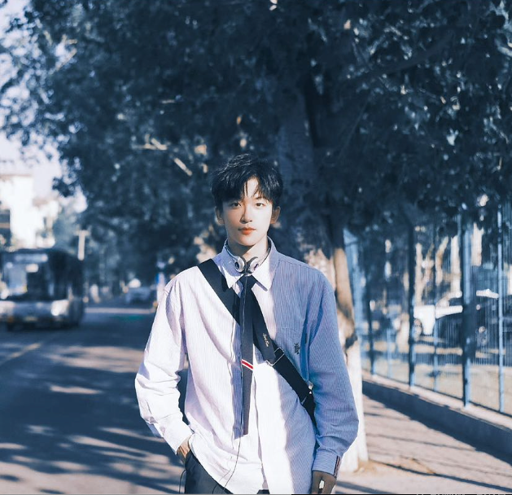
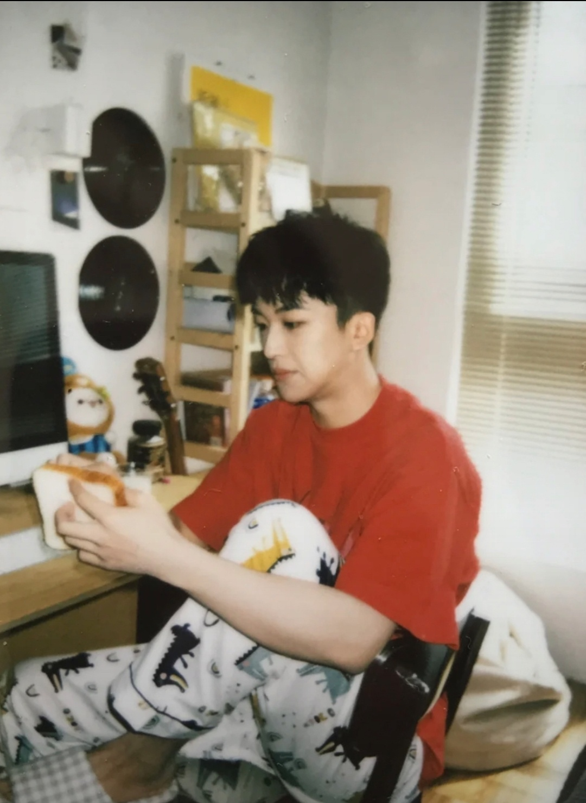

2019年1月13日，受邀出席“记忆·乡愁”廖昌永个人独唱音乐会，与张超、方书剑、梁朋杰共同演唱歌曲《鸿雁》；5月，参加《声入人心》音乐会全国巡演；5月24日，参加湖南卫视生活服务纪实节目《向往的生活》；6月，参加《你眼里的蓝》全国巡回演唱会；8月，同倪萍、范明、张晨光三位老艺术家搭档，作为常驻嘉宾参加东方卫视网络文化代际互动体验节目《花样新世界》。
2020年1月2日，主演的青春校园成长剧《那年夏天的秘密》播出，黄子弘凡饰演男主角梅小九；1月17日，参加中央广播电视总台2020央视网络春晚，与高杨、方晓东等演唱《我爱你中国》；1月25日，在《“岭南春来早”——2020年广东卫视春节晚会》上，同中国三大男高音戴玉强、莫华伦、魏松等演唱《大潮起珠江》，并与洪之光、南枫、方书剑演唱《春天序曲》；4月21日，发行首支个人单曲《Waking Now》，该曲为全英文演唱；5月，主演改编自角野荣子同名小说的音乐剧《魔女宅急便》中文版，饰演梦想在天空中飞翔的男孩蜻蜓；7月18日，在上海保利城市剧院举办“Fine！我热爱的世界”个人音乐会；9月10日，演唱的腾讯音乐娱乐特别企划「返场」之「华语金曲：10 20 30」专题歌曲《那年夏天宁静的海》发布；9月19日，出席第十一届中国电影导演协会2019年度表彰大会，与鞠红川演唱歌曲《不见不散》。
2023年1月6日，在成都麓湖水上剧场举办黄子弘凡2023“交个朋友”音乐会；1月20日，参加《2023川渝春节联欢晚会》，与冯提莫、管栎、黄英演唱民歌《黄杨扁担》《太阳出来喜洋洋》；2月5日，参加《2023湖南卫视芒果TV元宵喜乐会》；3月3日，作为“荐乐团”成员参加的湖南卫视星素互动跨屏合唱音乐综艺《我想和你唱第四季》播出；3月16日，参加的芒果TV普法教育推理节目《大侦探第八季》播出；4月21日，发布单曲《给你给她给他给我们的礼物》，在该曲中担任作曲、制作并参与作词；4月29日，在中央电视台电影频道《佳片有约》节目中演唱歌舞片《马戏之王》插曲《最佳演出》；5月31日，参加的芒果TV实景解密体验秀《密室大逃脱第五季大神版》播出；6月15日，在2023中国佛山金南狮网络视听推优大会上，与王丽坤、张赫、汪睿一同演唱主题曲《此生遇见》；6月17日，作为“剧能说观察团”成员参加的优酷OST音乐综艺《剧好听的歌》播出；7月2日，参加的芒果TV益智文化类旅行番综《跳进地理书的旅行》播出 ；7月15日，参加的芒果TV实景博弈推理综艺《森林进化论》播出；7月16日，参加湖南卫视毕业晚会《不设限毕业礼》，同文韬、齐思钧、蒲熠星、唐九洲、石凯一起演唱《像你这样的朋友》；7月22日，在英雄联盟手游亚洲联赛总决赛上演唱《Waking Now》；7月23日，参加人民日报《夏日音乐会》；7月28日，为电视剧《独家童话》演唱的插曲《明明》发布。
8月5日，参加乌兰布统国际音乐节；8月13日，参加横店OST音乐节；9月1日，发行单曲《成为你想成为的大人》；9月24日，参加的江苏卫视乡村美食寻访类真人秀《舌尖上的乡村》播出；同日，为电影《我是哪吒2之英雄归来》演唱的宣传推广曲《再见再见》发布；9月26日，获得2023微博音乐盛典“年度期待歌手”；9月29日，发行单曲《歌谣》；9月30日，参加的腾讯视频综艺节目《闪亮的日子第四季》播出；10月1日，参加常州太湖湾音乐节；10月6日，参加淮安洪泽湖畔音乐节；10月14日，参加的芒果TV综艺节目《南波万的聚会第二季》播出；10月15日，参加佛山谷德乐克音乐节；10月20日，为NOVA电子竞技俱乐部演唱的无畏契约战队主题曲《无畏瞩目》发布。
10月21日，参加新华社·声在中国大众电影2023大湾区音乐汇，与井胧演唱歌曲《刀剑如梦》；10月22日，作为“常驻打歌仔”参加的优酷音乐类综艺节目《朝阳打歌中心》播出；10月28日，参加2023深圳“一带一路”国际音乐季QQ音乐巅峰之夜；10月29日，参加南京江豚音乐节；11月4日，参加杭州不止音乐节；11月9日，参加的浙江卫视互动演绎暖情访谈节目《三个少年第二季》播出；11月10日，发行单曲《捕梦》；11月11日，在北京二七剧场开启黄子弘凡2023-2024“捕梦日记”巡回音乐会 ；11月18日，参加的湖南卫视音乐慢综艺《时光音乐会·老友记》播出；11月25日，参加重庆唛恩音乐节，同日，参加的芒果TV益智类解密互动节目《名侦探学院第七季》播出；11月29日，发行EP《大世界的奇妙玩家》，收录《飞》《与世界和解》等五首歌曲；12月16日，参加广州星巢秘境音乐节；12月17日，参加南宁W-POP音乐节。12月31日，参加《2023最美的夜 bilibili晚会》。
